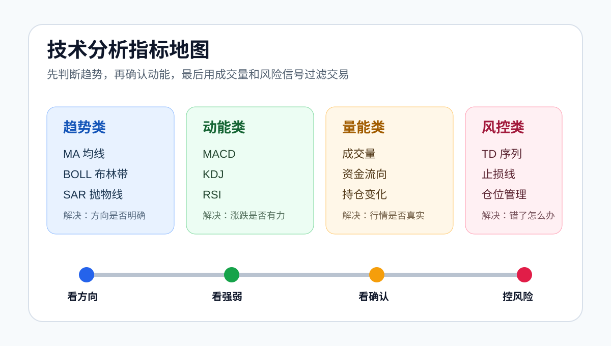

传统技术指标主要来自价格和成交量，而交易大数据能帮助我们观察市场参与者的情绪和仓位结构。对合约交易者来说，这类数据很有参考价值。
01
常见数据类型
- 多空人数比：看市场参与者偏多还是偏空。
- 合约持仓量：看市场资金是否正在进场。
- 资金费率：看多空双方的持仓成本。
- 大户持仓倾向：观察资金量较大的账户偏向。
- 主动买卖量：判断短线买卖力量变化。
02
怎么理解多空比
多空比高，不代表价格一定上涨。很多时候，市场过度一致反而意味着拥挤风险。如果多数人都在做多，一旦价格回落，可能触发集中止损。
多空比低也不等于一定下跌。如果空头过度拥挤，价格反弹时可能出现空头回补。
03
持仓量和资金费率
持仓量上升，说明更多资金进入合约市场。如果价格上涨且持仓量上升，说明多头推动可能增强。如果价格横盘但持仓量持续上升，说明多空分歧变大，后续波动可能放大。
资金费率持续偏高，说明做多成本上升，也说明多头情绪可能过热。资金费率持续偏低或为负，则说明空头情绪更强。
04
实战使用
交易大数据适合作为情绪过滤器。如果 K 线形态看多，但多空比和资金费率已经极端偏多，就要降低追多仓位。如果技术形态看空，但空头已经极度拥挤，也要警惕反弹风险。
05
多空人数比怎么避免误读
多空人数比反映的是账户数量，不一定等于资金规模。很多小账户集中做多，可能会让多头人数占比很高，但真正影响价格的仍然可能是大资金。
因此，多空人数比不能单独判断方向。它更适合用来观察市场是否过度一致。当多数人都站在同一边时，行情反而容易出现反向波动。
06
持仓量的四种组合
价格上涨、持仓量上升：多头资金可能正在进场，趋势延续概率提高。
价格上涨、持仓量下降：可能是空头平仓推动上涨，持续性需要观察。
价格下跌、持仓量上升：空头力量可能增强，也可能是多头被动补仓，风险较高。
价格下跌、持仓量下降：可能是多头离场或市场降温，短线波动可能收敛。
07
资金费率怎么用
资金费率可以理解为合约多空双方的持仓成本。当资金费率长期偏高，说明做多拥挤；当资金费率长期偏低或为负，说明做空拥挤。
极端资金费率不是立刻反转信号，但它会改变交易赔率。比如上涨趋势里资金费率持续高企，继续追多的风险就会变大。
08
大户数据的参考价值
大户持仓倾向可以帮助观察资金量更大的账户站在哪一边。但大户数据也不能神化，因为不同大户策略不同，有人做趋势，有人做对冲，还有人只是短期套利。
更合理的做法是把大户数据当作辅助：如果价格结构、成交量和大户方向一致，信号更清晰；如果互相矛盾，就降低交易级别。
09
适合使用的场景
交易大数据最适合用在合约交易和高波动行情里。现货交易者也可以参考，但重点应该放在市场情绪和风险过滤上，而不是用它直接判断买卖点。
当价格接近关键压力位时，如果多头人数比、资金费率和持仓量都处在高位，说明市场可能过度乐观。这个时候即使趋势还没反转，也不适合盲目追多。
当价格接近关键支撑位时，如果空头拥挤、资金费率偏低，同时价格跌不动，可能说明空头回补风险上升。
10
数据之间要互相验证
单个数据容易误导。多空比偏多，可能只是散户偏多；持仓量上升，可能是多头加仓，也可能是空头加仓；资金费率偏高，可能代表强势，也可能代表拥挤。
更合理的流程是：先看价格趋势，再看持仓量变化，然后看资金费率是否极端，最后用多空比和大户数据判断市场是否过度一致。

11
参考来源
- OKX：零基础学K线系列常用分析指标教学
https://www.okx.com/zh-hans/learn/zero-based-learning-market-analysis